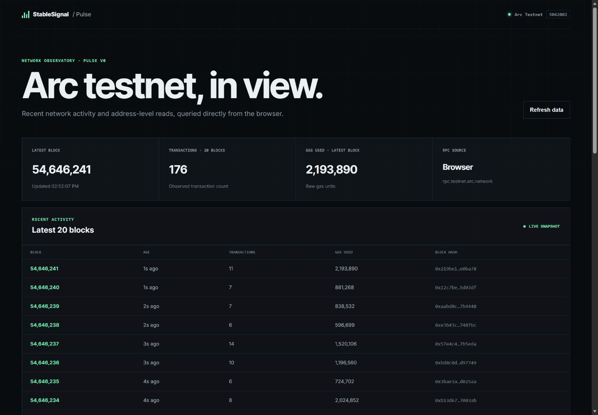

Recent activity
Inspect the latest published Arc testnet blocks, transaction counts, gas-use context, and a recent transaction feed.
Product 01 · Public beta
Pulse is a periodically refreshed network snapshot and research interface for following recent Arc testnet blocks, transactions, gas use, wallets, and contracts.
Public-beta scope
The interface prioritizes reproducible observation and independent follow-through over broad analytics claims.
Inspect the latest published Arc testnet blocks, transaction counts, gas-use context, and a recent transaction feed.
Validate a wallet address and follow its public testnet record into ArcScan.
Validate a contract address and open the corresponding ArcScan record.
Compare two fixed captures and follow each record to its research note, snapshot bytes, and onchain checkpoint.
Release surface
The dated v0 capture preserves the reviewed baseline. The published interface attempts a newer 20-block snapshot periodically and shows the observed block time so delays remain visible.

Research standard
Pulse keeps these three layers distinct so each claim can be assessed on its own.
Values returned by the configured Arc testnet RPC at a recorded time.
Calculations such as transaction totals and gas-utilization ratios, using published definitions.
Clearly labeled research notes that do not overstate a short testnet sample.
Known limits
Pulse reports the latest successfully published testnet view. Scheduled delivery can be delayed and does not represent production availability.
RPC availability, short-lived reorganizations, test activity, and the selected observation window can affect what is displayed.
Pulse is not a finality oracle, indexer, risk score, wallet, custody service, transaction signer, or source of financial advice.
Arc and Circle are referenced only as third-party network and ecosystem context. StableSignal is independent and is not affiliated with, endorsed by, or sponsored by Circle or Arc.
Pulse public beta
Use the snapshot interface, then follow any displayed record to its public explorer source.